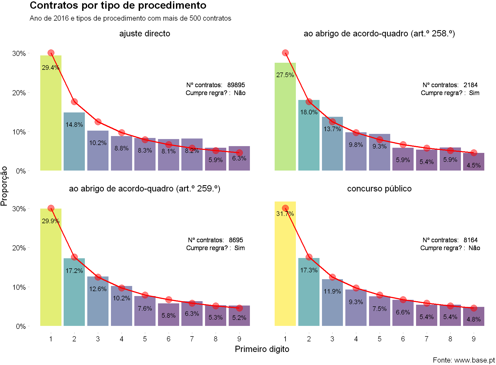

By António Cruz | June 5, 2017
A deteção de situações anómalas é um objetivo recorrente a todo o tipo de organizações e em todas as áreas.
A análise de dados utiliza tecnologias para detetar anomalias, padrões e indicadores de risco num conjunto de dados.
Desde a deteção da fraude contabilística, à intrusão de sistemas digitais, falhas, erros ou a fabricação manual de evidências, são alguns dos exemplos onde podem ser utilizados algoritmos de deteção de situações anómalas.
Diversos tipos de algoritmos podem ser utilizados, em função do problema de negócio em causa, uns mais complexos do que outros e com diferentes graus de dificuldade de implementação.
Eu pessoalmente gosto das soluções simples e que podem produzir resultados rapidamente.
Por isso, vou vos falar num mecanismo bastante simples e com resultados surpreendentes. Já ouviram falar na Benford’s law? Não? Vocês é que ficam a perder.
Benford’s law
Pensa-se que foi o matemático e astrónomo Simon Newcomb, em 1881, o primeiro a publicar um artigo sobre o fenómeno que mais tarde veio a ser conhecido por Benford’s law (vamos chamar-lhe lei de Benford).
Ele apercebeu-se que as primeiras páginas dos livros da biblioteca estavam muito mais usadas e que o desgaste ia diminuindo nas páginas com maiores dígitos. Ou seja, as páginas que começavam por 1 eram mais lidas que as que começavam por dígitos maiores.
Newcomb não disponibilizou nenhuma teoria para a descoberta e passados 50 anos, aparentemente sem ligação à descoberta inicial, o físico Frank Benford também reparou que as primeiras páginas dos seus livros estavam mais gastas que as ultimas.
Perante a descoberta Benford testou a sua hipótese, que existiam naturalmente mais números que começavam por dígitos menores. Em mais de 20000 observações de eventos e factos tão distintos como a área dos rios, o peso atómico dos elementos, números que apareciam nos artigos do Reader’s Digest, etc, Benford provou a sua hipótese.
Essa distribuição que determina que os números menores aparecem com mais frequência que os maiores ficou conhecida como a lei de Benford e determina que a proporção de ocorrência dos números, neste caso para o primeiro digito, segue a seguinte distribuição:
Ou seja, para números gerados naturalmente a percentagem de vezes em que o 1 aparece como primeiro digito deverá ser de 30.1%, o 2 deverá aparecer como primeiro digito em 17.6% das vezes, e assim sucessivamente.
O web site http://testingbenfordslaw.com/ coloca à prova a lei de Benford perante um conjunto diverso de dados como os seguidores de utilizadores no twitter, a população das cidades espanholas, a despesa do governo Inglês, número de moradas Brasileiras, o PIB real dos países, etc.
Tudo isto é muito interessante, mas perguntam vocês se isto tem alguma base cientifica que nos permita confiar numa análise deste tipo?
Durante mais de 90 anos matemáticos e estatísticos tentaram explicar tal fenómeno. Mas apenas em 1995 o matemático Hill forneceu uma explicação e demonstração do facto.
O que vos posso dizer é que a coisa funciona muito bem. Mesmo muito bem. Estranhamente muito bem. De tal forma que a técnica é cada vez mais utilizada, nomeadamente na auditoria forense.
Existem várias formas de aplicar a lei de Benford, nomeadamente ao primeiro digito, dois primeiros dígitos, 3 primeiros dígitos, 2 últimos dígitos ou números de segunda ordem. Existem também várias formas de determinar o nível de significância (se um conjunto de eventos estão, ou não, conformes com a regra) como sejam o teste do qui-quadrado, teste Kolmogorov–Smirnov, ou o teste de kuiper. No exemplo prático deste artigo irei analisar o primeiro digito e utilizarei o teste de Kolmogorov–Smirnov com um nível de significância de 5% para avaliar se a regra é ou não cumprida.
Não se pense, no entanto, que a técnica é uma panaceia para todos os males. Ela não se deve aplicar em determinadas situações, como por exemplo quando os números são atribuídos (códigos postais, número de faturas ou cheques, etc), quando existem níveis psicológicos nos preços (19.99 em vez de 20), quando existem limites naturais (altura de adultos), etc.
A técnica tem-se revelado particularmente eficaz na área contabilística quando os números resultam de combinações matemáticas (quantidade x preço unitário), e nas áreas das contas a receber e a pagar, faturação, despesas, etc.
Aplicação à contratação pública
Para efeitos de exemplo prático irei utilizar os dados do portal Base. Podem ler mais sobre a forma como os dados foram extraídos e processados neste artigo.
Agora prestem atenção. Neste exemplo prático, tal como em qualquer outra situação, esta técnica deve ser utilizada em conjunto com outras e o resultado dela, por si, não significa que existe fraude, crime ou más práticas de gestão.
Mas um resultado positivo no teste deveria chamar a atenção dos responsáveis da organização, em primeiro lugar, para a avaliação das suas práticas de contratação, e, em segundo lugar, das entidades de controlo e inspetivas para uma possível auditoria.
Ou seja, um resultado positivo (os números divergem da distribuição de Benford) não tem um significado automático. Mas deveria, isso sim, despoletar uma análise mais cuidada para que se possa perceber as razões do verificado.
Um resultado negativo também não significa que está tudo bem, não é um aval ou certificação. Existem sempre casos de falsos positivos e falsos negativos.
Vamos começar por uma hipótese simples: os contratos celebrados em 2016 cumprem a lei de Benford, por tipo de procedimento?

No gráfico as colunas representam a distribuição real e a linha vermelha a distribuição teórica segundo a lei de Benford.
Não foram considerados alguns tipos de procedimentos, como por exemplo os concursos limitados por prévia qualificação e os procedimentos de negociação, por terem muitos poucos contratos.
Podem também reparar que o ajuste direto e o concurso público não cumprem a regra segundo o teste de significância escolhido (teste de Kolmogorov–Smirnov com um nível de 5%), por uma boa razão. A maioria destes testes estatísticos é muito sensível quando o número de observações (neste caso, contratos) é muito pequeno ou muito grande. No caso do ajuste direto e do concurso público o número é enorme.
No entanto, o apresentado faz sentido do ponto de vista da perceção que temos da realidade pois os ajustes diretos têm limites de valor e estão mais sujeitos a valores menos naturais.
Mas a base de partida parece-me suficientemente boa para sermos mais específicos na nossa análise.
A partir deste momento os nossos dados apenas irão considerar os 4 tipo de procedimentos que estão no gráfico anterior:
ajuste direto;
ao abrigo de acordo-quadro (artº 258º);
ao abrigo de acordo-quadro (artº 259º);
concurso público
Vamos avaliar a lei e Benford por cliente.
Para o efeito irei apresentar 9 exemplos de clientes (escolhidos aleatóriamente) cujos contratos celebrados em 2016 cumprem a lei de Benford e que realizaram pelo menos 300 contratos.
Como podem verificar, mesmo não existindo uma sobreposição gráfica perfeita entre a distribuição real e a teórica, o teste de significância confirma o cumprimento da regra. Isso também acontece porque o número de contratos por entidade não é demasiado elevado o que a acontecer tornaria o teste muito sensível a qualquer variação relativamente à distribuição teórica.
O número de clientes cumpridores é muito maior, estes forma apenas exemplos para permitir avaliar o resultado.
Podemos também efetuar a mesma análise, agora para 9 exemplos de entidades cujos contratos realizados em 2016 não cumprem a lei de Benford.
Mais uma vez realço que este resultado não permite concluir que nos exemplos apresentados existiu fraude, crime ou má pratica de gestão. Mas julgo que seria prudente uma avaliação mais detalhada e cuidada por parte dos interessados, na sua política de contratação pública.
A partir deste momento poderiamos aplicar a mesma metodologia por fornecedor, ou outro agrupamento que fosse adequado ao objetivo pretendido.
Para finalizar apresento um gráfico que identifica os clientes com mais de 50 contratos celebrados em 2016, considerando apenas os 4 tipos de procedimento indicados anteriormente.
Cada ponto representa um cliente e os pontos acima da diagonal cumprem a lei de Benford.
Apesar da maioria dos clientes cumprir a regra, existem muitos onde tal não acontece.
Conclusões
A lei de Benford é uma ferramenta bastante útil para detetar situações merecedoras de uma análise mais cuidada e detalhada.
Permite otimizar recursos ao destacar, num grande volume de dados e de forma simples e rápida, as situações merecedoras de tratamento especial.
Os níveis de significãncia estatística são flexíveis e podem ser otimizados com a experiência e objetivos pretendidos.
Quando conjudado com outras ferramentas de análise de dados, podem ser alcançados resultados bastante válidos.